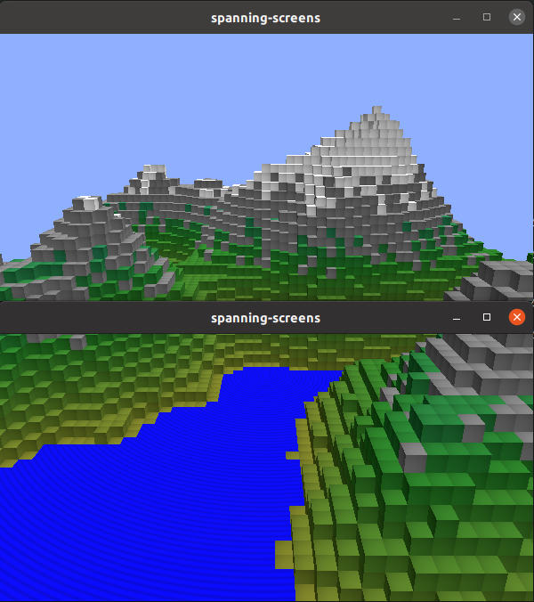

Qt Wayland Compositor Examples - Spanning Screens
Spanning Screens is an example that demonstrates how to let Wayland clients span multiple screens.
Introduction
Spanning screens is a Wayland compositor example that maximizes clients across a top and a bottom screen.

For an introduction to the basic principles of creating a Qt Wayland Compositor with Qt, see the Minimal QML example.
Supporting Multiple Screens
In Qt Wayland Compositor a screen is represented by a WaylandOutput, and a Window is used to contain the Qt Quick scene representing both clients and the compositor's UI.
In this example, a multi-screen setup is emulated by creating two windows on the primary screen, but the code can easily be modified to target multiple physical screens.
// Enable the following to make the output target an actual screen, // for example when running on eglfs in a multi-display embedded system. // screen: Qt.application.screens[0]
Since each Window represents an isolated Qt Quick scene, this means we need a trick to have the same client content display inside both windows. The way to do this in Qt Wayland Compositor is to create two views of the same client content: One for the "top" window and one for the "bottom". The views share a reference to the same underlying graphics buffer. This allows us to copy different areas of the client's surface onto each of the windows.
const topItem = chromeComponent.createObject(topSurfaceArea, { shellSurface }); const bottomItem = chromeComponent.createObject(bottomSurfaceArea, { shellSurface, y: Qt.binding(function() { return -topSurfaceArea.height;}) });
When the client connects to the shell extension XdgShell, we create two references to the surface. One of them is added to the "top" output, and the second to the "bottom". The item on the bottom output also gets an offset corresponding to the height of the top output. This ensures that the part of the client surface showing on the bottom output starts where the top output ends.
const height = topSurfaceArea.pixelHeight + bottomSurfaceArea.pixelHeight; const width = Math.max(bottomSurfaceArea.pixelWidth, topSurfaceArea.pixelWidth); const size = Qt.size(width, height); toplevel.sendFullscreen(size);
In addition, we tell the client to resize its surface so that it fills both the top and bottom window. The end result is a client that spans two windows, or "screens".
Referencing the same client surface from multiple items is a tool which can be used for many things. For a demonstration of a desktop-style compositor where windows can be moved from screen to screen, take a look at the Multi Screen example.
The Multi Output example shows how client surfaces can be displayed on multiple outputs with different sizes and other properties.
Note: In order to support multiple Wayland outputs in the same compositor, the Qt::AA_ShareOpenGLContexts attribute must be set before the QGuiApplication object is constructed.